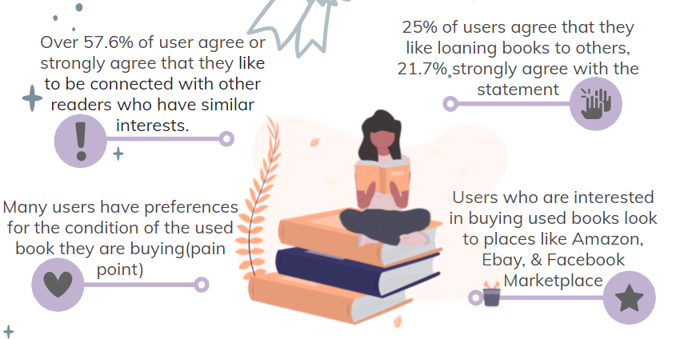
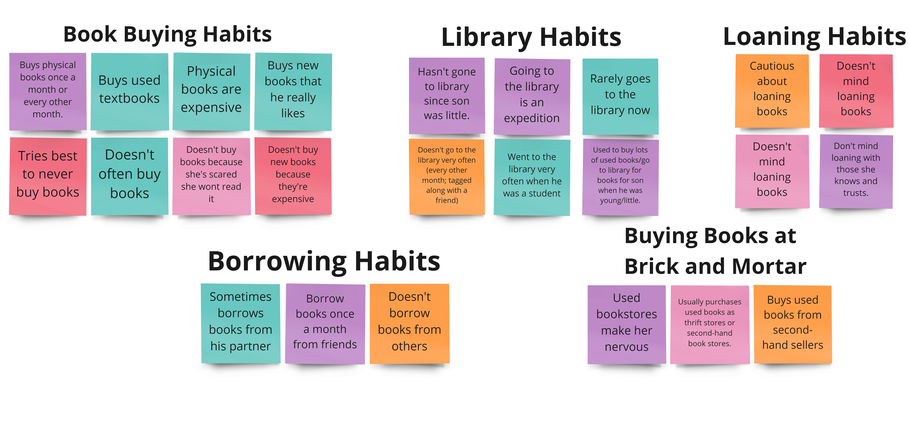
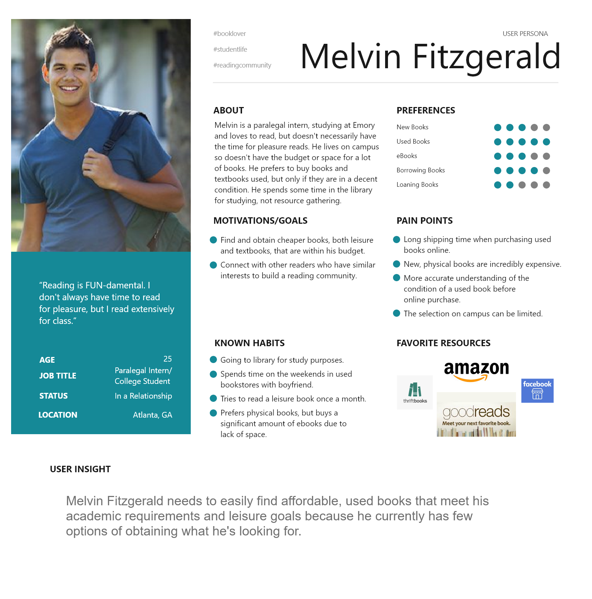
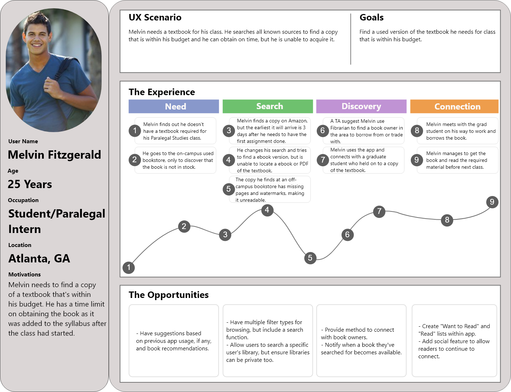

- Team
- Lynn Bigham, Mengfei Guan, and I
- My Role
- User Research, Competitor Analysis, Interviews, Usability Testing, Wireframing
- Goal
- Build an app that can foster a community surrounding books and helping readers increase their book sharing and access to knowledge
- Tools Used
- Figma, Adobe XD, Miro, Trello, GitHub, VS Code, Hotjar, Whimsical & Google Analytics.
The Challenge
Researching the User
- Competitor Analysis
- Survey & One-on-One Interviews
Click here to download my Competitor Analysis

- Affinity Diagram
We also all contributed to a user interview research plan where we formulated 20 or so open-ended questions surrounding their opinions on pets, the idea of Pawpup, and any relevant, potentially helpful information. Below are the notes taken from the user interviews and grouped up under similar categories:
Defining the User
- User Persona

- User Journey
Click here to get a better look

Ideating
- User Flow
Click here to get a better look
Prototyping
- Sketching
- Low-Fidelity Prototype
- This is what we called a lower fidelity prototype because what we were submitting was ultimately still going to be a low fidelity version of the app. Here we used whimsical to create a middle ground between hand drawn sketches and a low-fidelity prototype to further guide our design decisions.
- High-Fidelity Prototype
- This was the final product we delivered, a higher fidelity but still low-fidelity prototype of Fibrarian.
- Iteration 1
- We found that users did not know how far away potential loaners were from them. Therefore, we prompted the user with a question of what their maximum search radius was so they have an idea of their proximity to potential loaners.
- Iterations 2
- Many users also skipped over the tutorial screen which gave them insight on how to use their lower navigation bar. Because of this, we included a help icon on the home screen to take them back to the original tutorial screen in case they needed that insight again.
Conclusions
The biggest challenge I faced in this group was honestly collaboration. I have always felt relatively good in all my past
collaborations whether it was the bootcamp or my university. However, this was definitely where my patience in collaboration
was tested. I felt that I clashed heads a lot and had to explain myself to one of my partners over trivial things while maintaining
complete professionalism. I felt like my design decisions were extremely valid and useful and many were just shut down even though I
had support from my other group members on those points. It was one of those cases where if they said the wall was purple, then the wall
was purple no matter what. I just made sure I advocated for the user no matter what and felt it could have gotten worse. I saw it as room
to grow and a reminder if I really wanted to be in this industry.
Another challenge was the fact that my group was the smallest, it only consisted of three members while every other group had four or
five members. The three of us were all also in different time zones which made scheduling tricky but got done nonetheless.
As for future developments, I would like to add a feature that allows users to access various libraries of followed/friends.
A more ambitious and preferred one would be to work in tandem with libraries/schools/local book clubs to foster an inclusive environment
for book-sharing and most importantly: access.